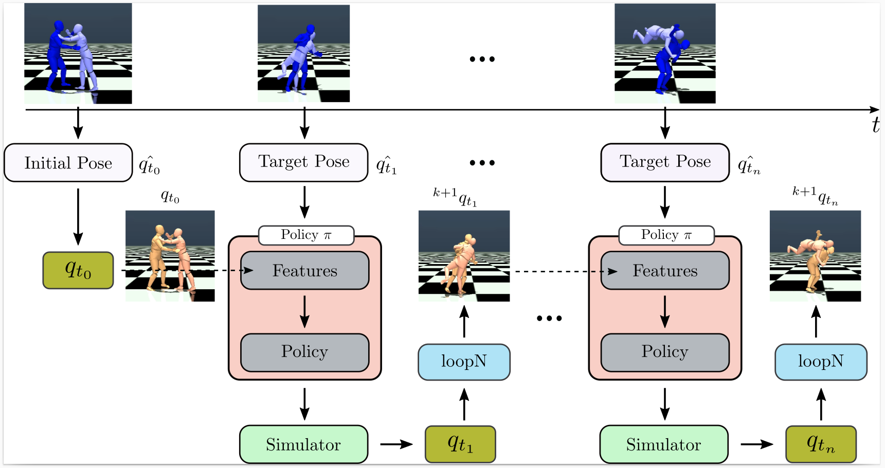

Paper
Paper
 Code
Code We introduce MultiPhys, a method designed for recovering multi-person motion from monocular videos. Our focus lies in capturing coherent spatial placement between pairs of individuals across varying degrees of engagement. MultiPhys, being physically aware, exhibits robustness to jittering and occlusions, and effectively eliminates penetration issues between the two individuals. We devise a pipeline in which the motion estimated by a kinematic-based method is fed into a physics simulator in an autoregressive manner. We introduce distinct components that enable our model to harness the simulator’s properties without compromising the accuracy of the kinematic estimates. This results in final motion estimates that are both kinematically coherent and physically compliant. Extensive evaluations on three challenging datasets characterized by substantial inter-person interaction show that our method significantly reduces errors associated with penetration and foot skating, while performing competitively with the state-of-the-art on motion accuracy and smoothness.
MultiPhys: Multi-Person Physics-aware 3D Motion Estimation
Given an input video with multiple people (left), we first obtain initial kinematic estimates of the
camera poses and 3D human motion using SLAHMR. Using these initial motion estimates, our proposed
framework corrects them and makes them physically plausible (right).
Pipeline.
We use the policy π to control the humanoid agents with the initial kinematic poses. We simulate all agents simultaneously in order to apply physics-based constraints to the reconstructed motion. The policy computes features from both the current state of the simulation and the target pose to later generate the action signal a that controls the agents. We place our loop-N component between target poses that correspond to each video frame.

Physics-aware Correction Module.
Results on ExPi dataset.
Results on Hi4D dataset.
Results on CHI3D dataset.
Results with 3 people.
Results with 4 people.
@inproceedings{ugrinovic2024multiphys,
author={Ugrinovic, Nicolas and Pan, Boxiao and Pavlakos, Georgios and Paschalidou, Despoina and Shen, Bokui and Sanchez-Riera, Jordi and Moreno-Noguer, Francesc and Guibas, Leonidas},
title={MultiPhys: Multi-Person Physics-aware 3D Motion Estimation},
booktitle={Conference on Computer Vision and Pattern Recognition (CVPR)},
year={2024}
}